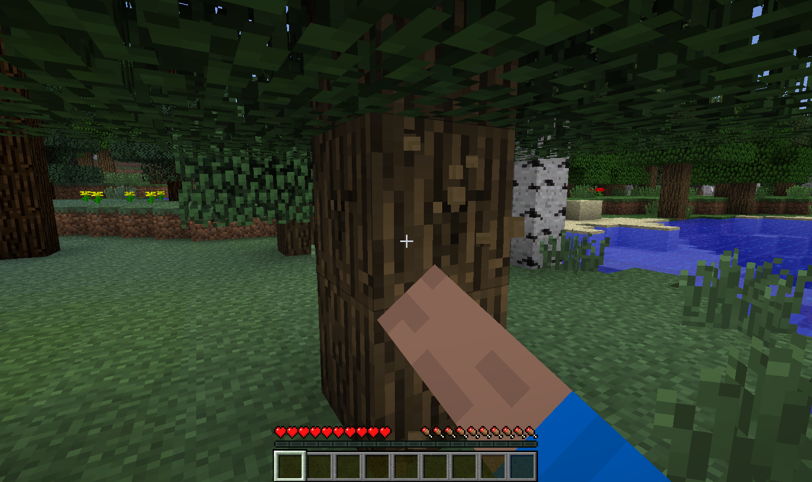
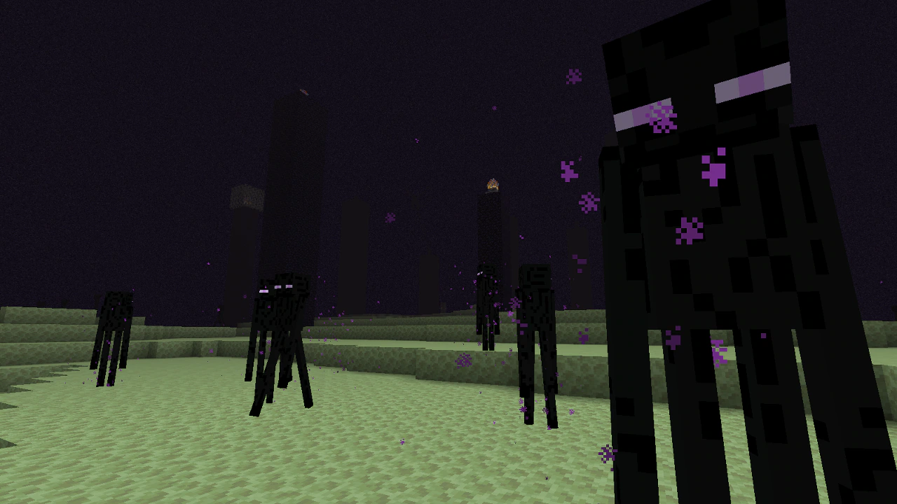
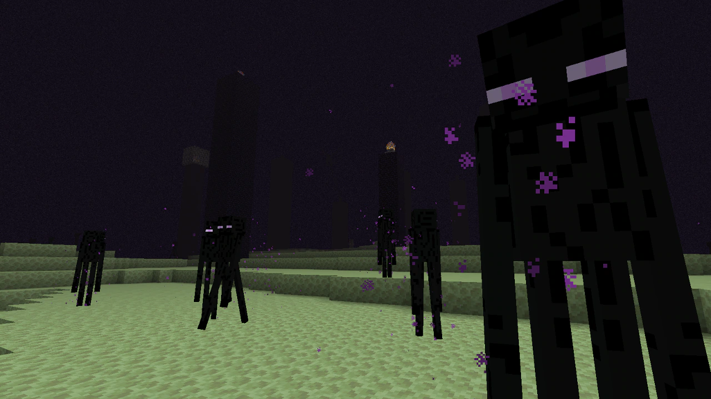
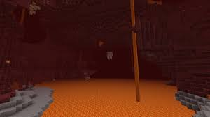
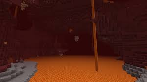
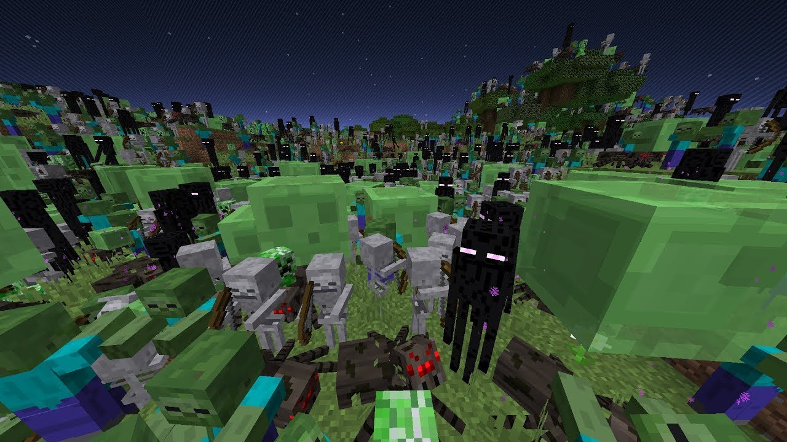

How to get good at Minecraft Multiplayer Minecraft
this website here is here to show you how to stop dying to your friends or other players in Minecraft
the prepping
- go out and start punching a tree

- after you could start to go and mine for things like iron coal and diamond's
- while in those caves you shoukd look for spiders for sting this will be used later for tools
- now your done with the garthering you should start making items like amor a full set than tools like sword and sheild and and axe and a bow
- now you basicly done
waponary
when fighting with other players one of the main things that could be the menaing of winning or losing is your wapons hoow well whats it made out of the encahntments on it like if its made out of diamond ot iron do your have a sheild or not this part will help you to what to use
wapons what to use well right away I'd say use stuff like diamonds or netherite these are the best at atacking now for the wapons them self you should use a sword and axe and axe you maybe asking yes an axe an axe could help incase of who ever your fighting has a sheild because an axe could disable the sheild for a bit for you can stirke the sword makes sense next would be an shield now even tho I just said an axe could disable your shield 9 times out of 10 they wont have one last off could be a bow or crossbow but they are both harder to use but can reall pack a punch encahntments are usefull if you sue them right like protection and thorms on your amor sharpness on your sword those are the basics basicly
area around you
when fighting most dont think of the area around them if if your in a desert ot in the neither or end or in an moutain area these could help like if your in the neither there you could find many things like lava and emerys these if they hurt could attadkc them and help you win or the lava if you push them into the lava you could get the win very easy or if your in an moutain area you push them off the leage and kill them if your in the end the enderman could help desert the catus and sometimes lava could help
 

 

the pictures above show some of the many places in Minecraft
player count/time
player count makes sense you maybe be saying but time what does time have to do with it well beofre i say anything i will get to the player count the player count makes sense because if there are one player you vs 3 players than you could lose unless you lay better and have better stuff that will be talked about in a later section but really if you have 3 people going against 2 or 2 it could mean the win or not depending on your teammates skills but 9 times out of 10 you could win with more people so if you can before pvp get a team to help you win a battle now for the time of day like if its daytime there is nothing stoping you or the otherplayers but if its like sya night time than you could use the near by mobs for you advantage by making them hit them and thye get a disadvantage and you could get an advantage but this could back fire on you and instead hurt you and they get an advantage so its a risk but still could be useful for you or could be the detah of you and your team

(not a real picture of a normal night just to show many of the mobs to help you of couse you probaly already know this)
fighting against player or mobs
yay you made it to the last and most importan part kinda where here we will talk about how to fight yay now this is gona talk about some of the stuff I was talking about in the other sections so fighting on npc (mobs) there isnt munch unless the more bigger ones like the dragon or wither but other than that there isnt munch now for the real part players now that we have player count envorment aorund you the time and prepping done you can could in mund you could now fight players and small note learning how to use a bow could be useful just saying look up videos for that now how to fight players if you fought the player before or seen them try to use that becuase if they for say use a bow more often than you could use a sheild and blocks to help you block the arrows and get closer to figth if than you are close to them you now are gonna need to see if thye fight u back in what way if they dont know how to figth you in a close combat than you could easily get to thme and figth them using your sword if they fight more close combat like with a sword and sheild than you could try to use a bow run in hit them with an axe to disable there sheild than you could run away and start shooting them with your arrows if they get close to use after disabling ther sheild you could always use blocks to build up than use your bow or go in use the axe and start hitting them they may panic and not notice or try to run form you so than you could use your bow if not those things dont work we could gte advanced use enchantments for amor to have protection thorns and other stuff to help you sword sharpness for more damage and maybe other things like fire aspect than knock back for the close rnage openets than for out bow you could use infity if you dont have munch arrows now punch could be usefull for the far range comabt if your openet like to use there sword alot but power is useful for damage flam is useful for extra damge bc of the fire afect mending is only useful fro repairing but you wont be able to have infity now potions they could be useful fro say stength it lets you do more damage than invisblity is more for running and stuff protecting is gettable form a golden apple regenition is also good now last in comabt with more than one player you should use main bow to get distance if they are close try to hit them away and build up use your sheild to block the hits damage splash potions could be useful though i didnt talk about it they are main good for groups tnt is a high risk ihigh reward type fo thing and thast about all i could think of for this hopes this could help you in your next comabt

image just becuase it didn't feel right not having on here